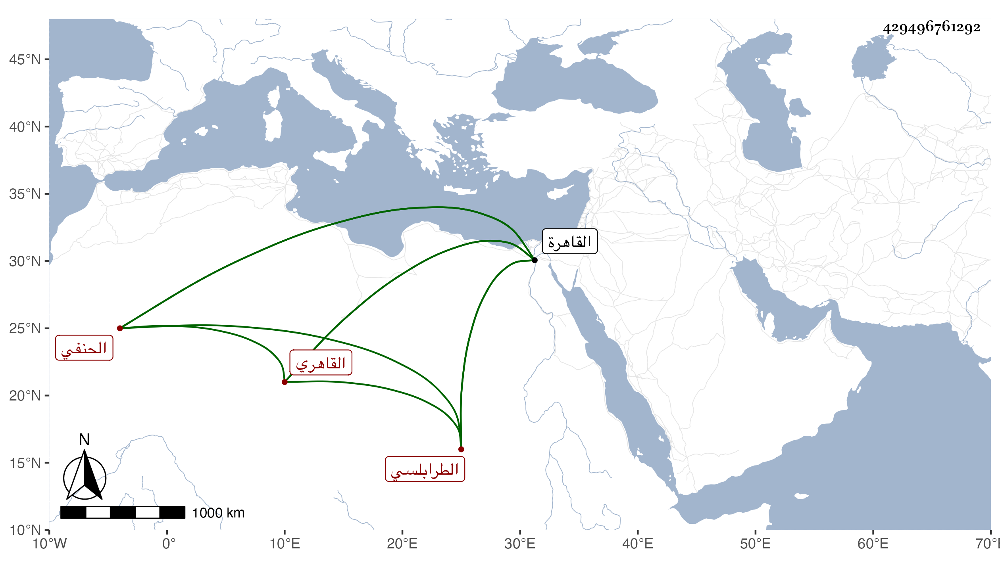

0902Sakhawi.DawLamic.ITO20230111-ara1.EIS1600.429496761292
Biography ID: 429496761292
466
عبد الرحيم بن محمد بن أحمد بن أبي بكر بن صديق التاج أبو اليسر وأبو اليمن وأبو الفضل وأبو محمد وأبو الحسن بن قاضي الحنفية الشمس أبي عبد الله بن الشهاب أبي العباس بن الامام ظهير الدين أبي المناقب الطرابلسي الأصل القاهري الحنفي شقيق قاضي الحنفية الأمين أبي نصر عبد الوهاب ووالد المعين محمد الآتيين ويعرف كسلفه بابن الطرابلسي . ولد في يوم الثلاثاء سابع عشري المحرم سنة خمس وسبعين وسبعمائة بالقاهرة ونشأ بها فحفظ القرآن وكتبا وعرضها على أئمة واشتغل يسيرا وأسمع بالقاهرة على حسين بن عبد الرحمن بن مناع التكريتي البعث لابن أبي داود وعلى العز أبي اليمن بن الكويك المسلسل واختلاف الحديث والأدب المفرد وعلى إبراهيم بن داود الامدي وناصر الدين أبي الفتح نصر الله ابن أحمد القاضي الحنبلي الشفا وعلى الصدر محمد بن العلاء علي بن منصور القاضي الحنفي صحيح البخاري وعلى التنوخي المسلسل ومسند الدارمي وعبد وجزء أبي الجهم وأشياء وكذا سمع المسلسل على الشمس محمد بن يوسف بن أحمد الحكار والشرف أبي بكر بن جماعة وعلى ثانيهما فقط جزء البطاقة في آخرين كالصلاح البلبيسي والشمس ابن الخشاب وابن الشيخة والسويداوي وبمكة بعد الثمانين على النشاوري الصحيحين وعلى الاميوطي صحيح مسلم فقط وعلى القاضي أبي الفضل محمد بن أحمد النويري وفي سنة اثنتين وتسعين على ابن صديق موافقات الدارمي وعلى المجد اللغوي خطبة قاموسه وخطبة المرقاة الوفية إلى طبقات الحنفية وإلى بدء الوحي من شرحه للبخاري منح الباري بالسيح الفسيح الجاري وتناول المجلد الأول منه وجميع المصنفين قبله ، وأجاز له القيراطي وابن رجب وأبو العباس بن عبد المعطي وسعد الله الاسفرائيني والشهاب أحمد بن ظهيرة وآخرون ، وناب عن أخيه فمن بعده إلا ابن العديم وولده فلم ينب عنهما رعاية لأخيه . وولي أيضا افتاء دار العدل والتدريس بالعاشورية وغيرها ، وحدث سمع منه الأئمة ، وكان كما قال شيخنا في إنبائه يصمم في الأحكام ولا يتساهل كغيره ، وأقعد بأخرة وحصلت له رعشة في بدنه ثم فلج فحجب وأقام كذلك سنين حتى مات في يوم الجمعة حادي عشري المحرم سنة إحدى وأربعين وصلى عليه بجامع الحاكم عقب الجمعة ثم دفن بحوش سعيد السعداء رحمه الله وإيانا .
